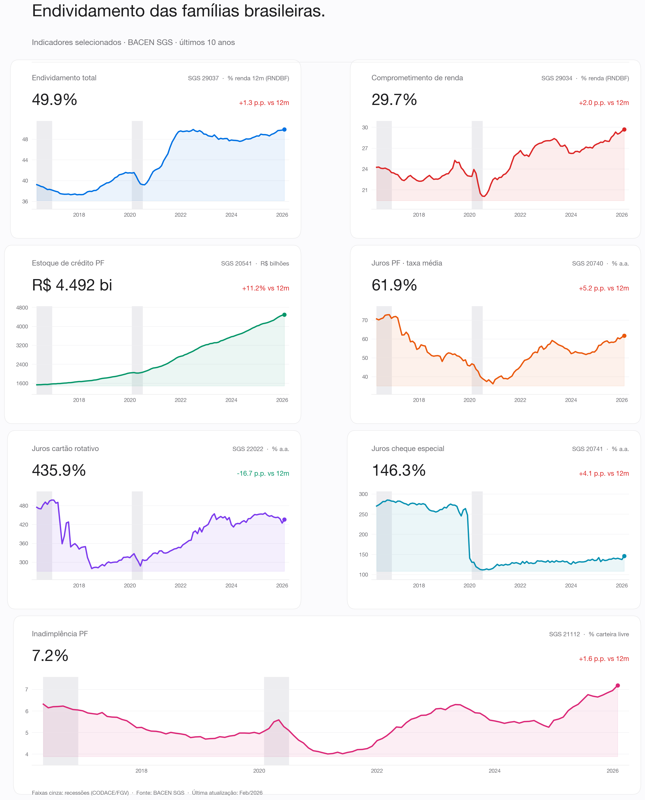
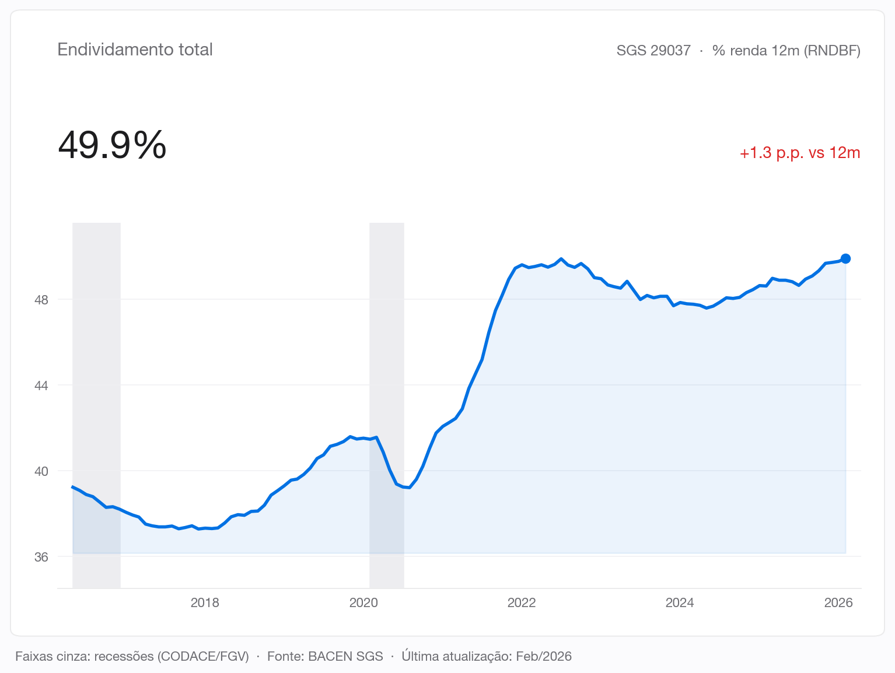
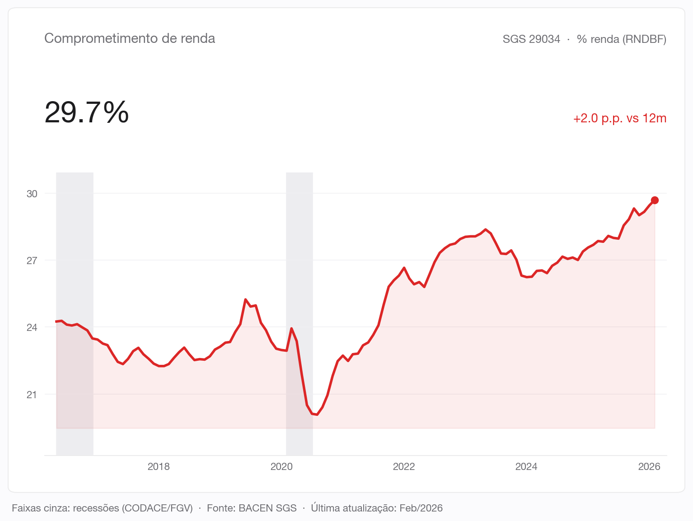
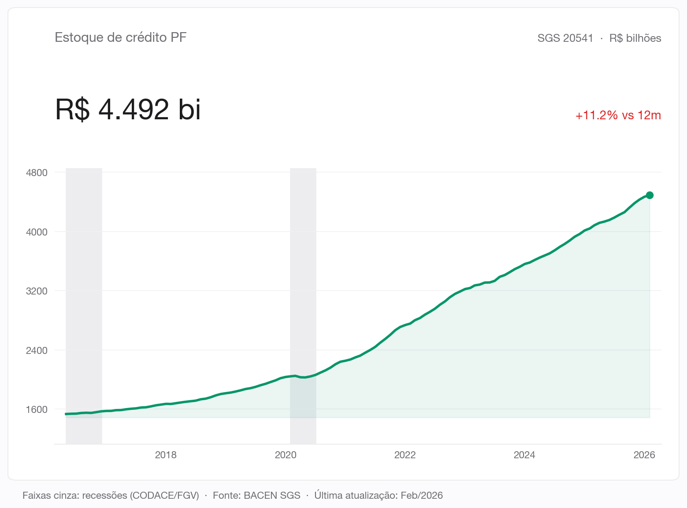
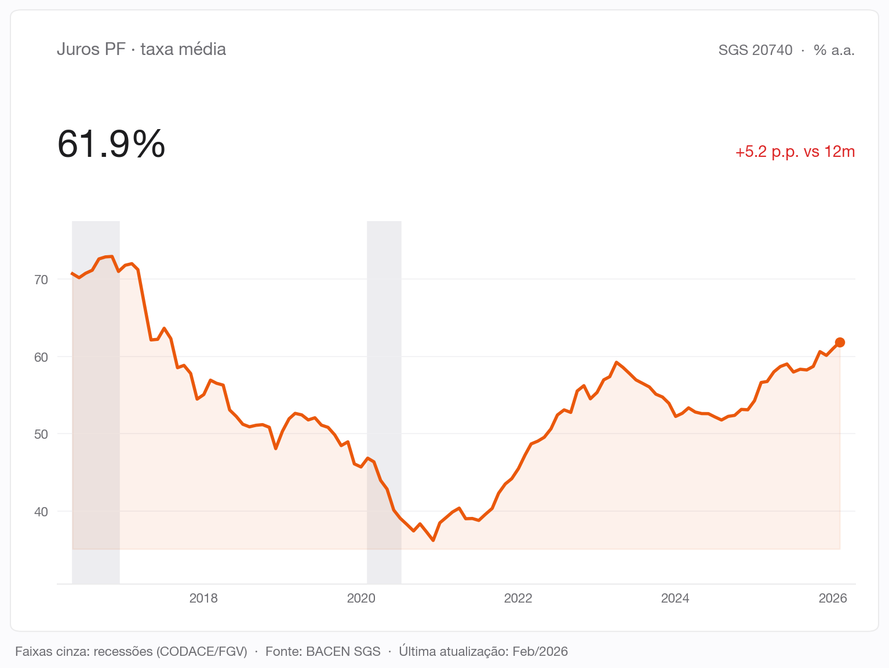
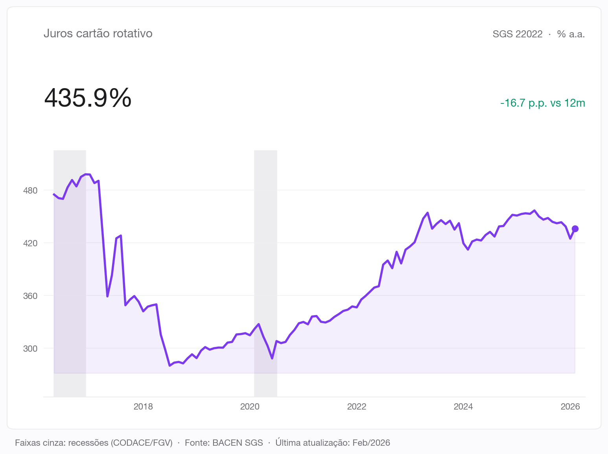
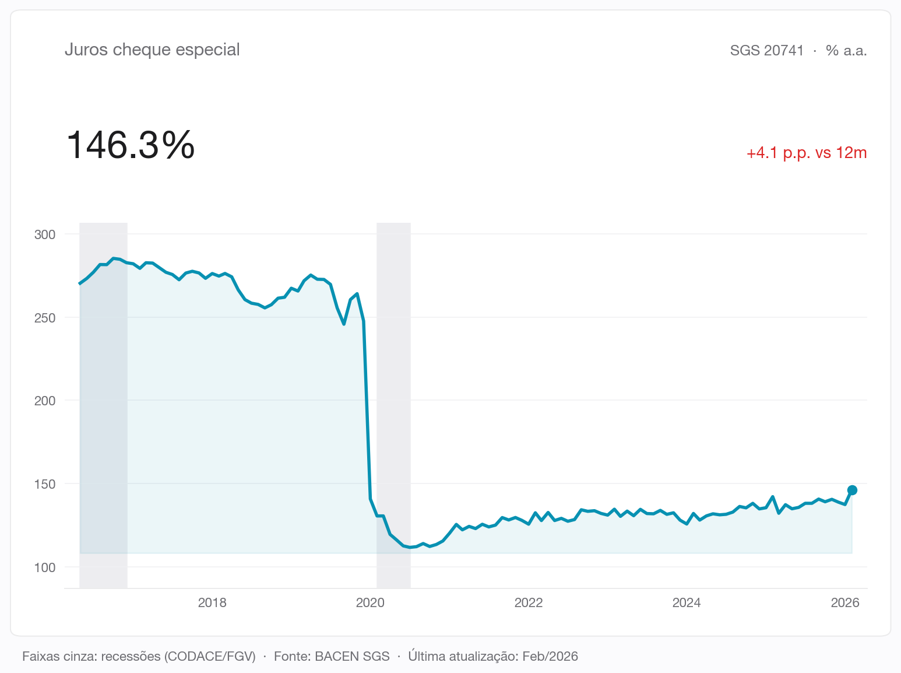
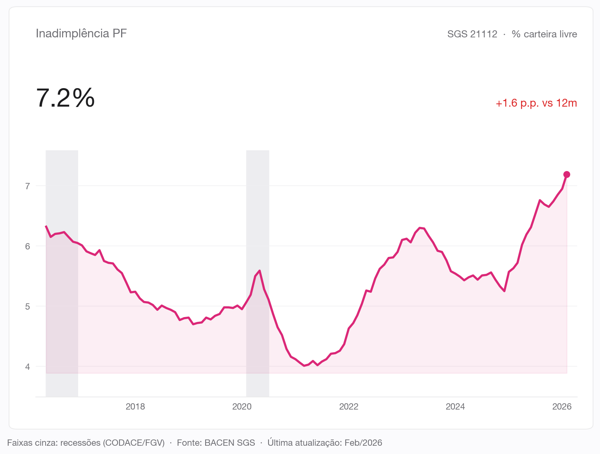

Análise · BACEN
Sete indicadores que descrevem como o brasileiro contrata, paga e atrasa dívida. Tudo direto do Banco Central, atualizado mensalmente.

Em maio de 2016 o brasileiro médio devia cerca de 41% da renda anual ao Sistema Financeiro. Dez anos depois, deve quase 50%. O estoque de dívida das famílias cresceu com consistência ao longo da década, não foi um soluço de pandemia, foi tendência.

Mas o comprometimento de renda, a parcela mensal efetivamente desembolsada para pagar dívidas, subiu menos. A leitura direta é simples: prazos esticaram. Famílias estão devendo mais, mas pagando parcelas parecidas durante mais tempo.

O estoque de crédito PF quase triplicou em valores nominais ao longo da década. Parte desse crescimento é virtuoso: bancarização, novos produtos, acesso ampliado. Parte vira o problema da última seção.

A taxa média de juros PF inclui crédito imobiliário, consignado e veículos, que puxam o número para baixo. Mesmo assim, oscilou em torno de 30% a.a. nos últimos anos, com queda em 2020 (Selic em 2%) e alta desde 2022. É essa média que esconde os produtos mais tóxicos do mercado.

Cartão de crédito rotativo e cheque especial são, há anos, as duas linhas mais caras do varejo bancário brasileiro. O rotativo oscila acima de 300% a.a.; o cheque especial, mesmo após o cap regulatório de 2020, segue em três dígitos. Dois produtos onde caiu, virou problema.


A inadimplência PF caiu na pandemia, efeito direto das renegociações em massa e dos programas emergenciais. Voltou a subir desde 2022, e hoje ronda os 7% da carteira PF total. Não é um número de crise, mas é o maior dos últimos anos e merece atenção quando combinado com o que vimos acima: mais estoque, mais endividamento, prazos mais longos.

Esses números viram tese de alocação quando combinados com renda fixa, risco de crédito privado e proteção patrimonial.
Agendar conversa